Pega 7如何导出应用程序
Pega版本：Pega 7.1.8
前言
当我们在Pega 7中完成一个应用程序后怎么把应用程序导出来并发给其他人呢？
操作步骤
打开导出页面
点击左上角DesignerStudio图标，依次选择Application -> Distribution -> Package
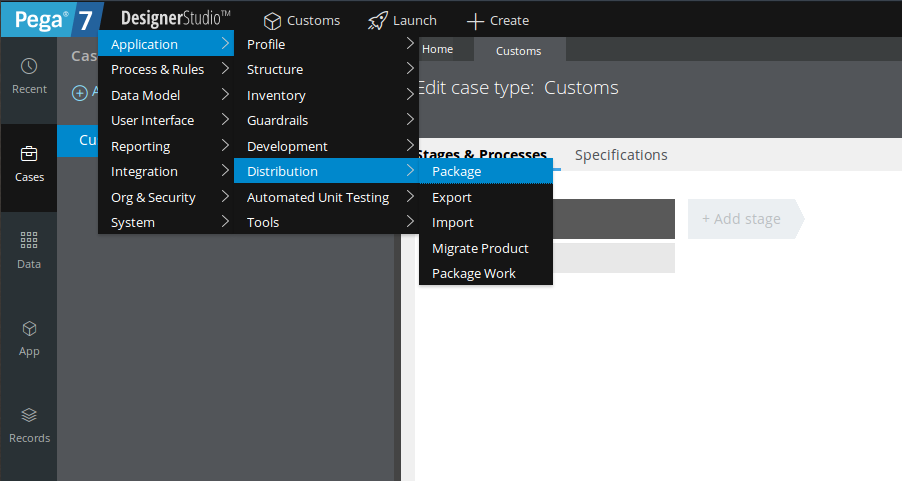
配置导出参数
在Package标签配置好你要导出的Application，Ruleset Name和RuleSet version
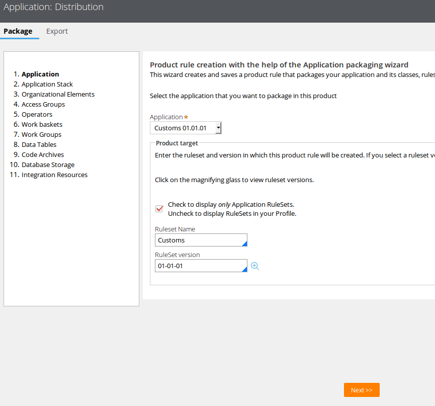
一路点击Next，直到遇到如下画面
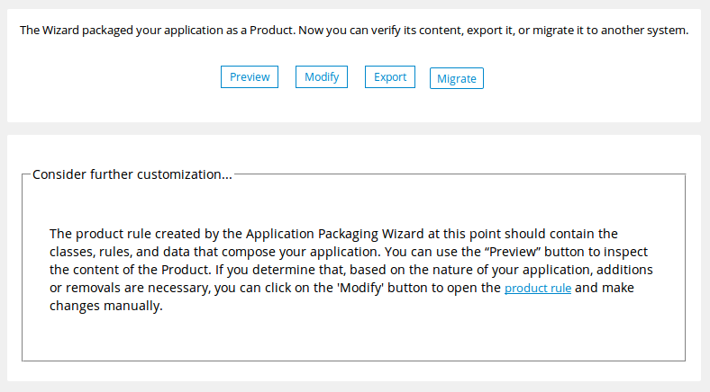
然后切换到Export标签在导出模式中选择Product
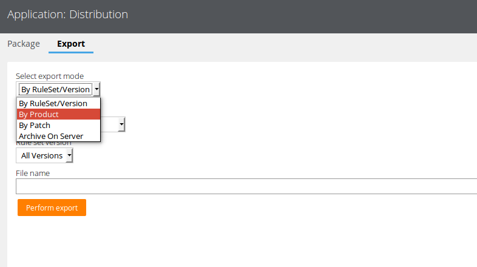
在产品列表中选择我们自己建的应用
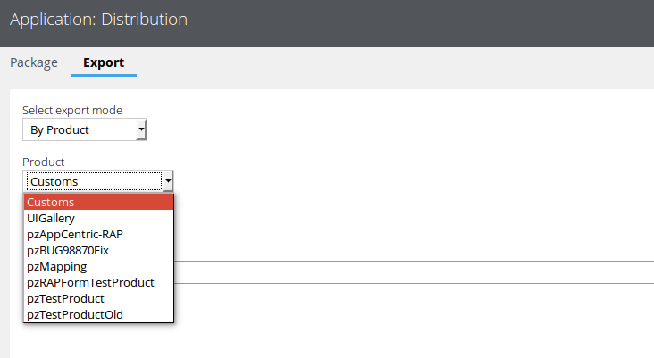
在版本列表中选择最新的版本
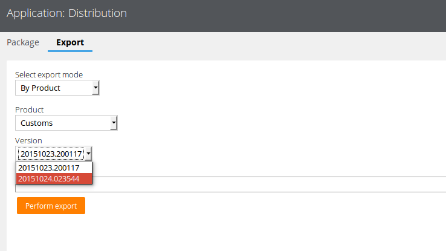
给导出的文件起一个名字，例如我的命名规则：应用名 + “_” + 8位日期
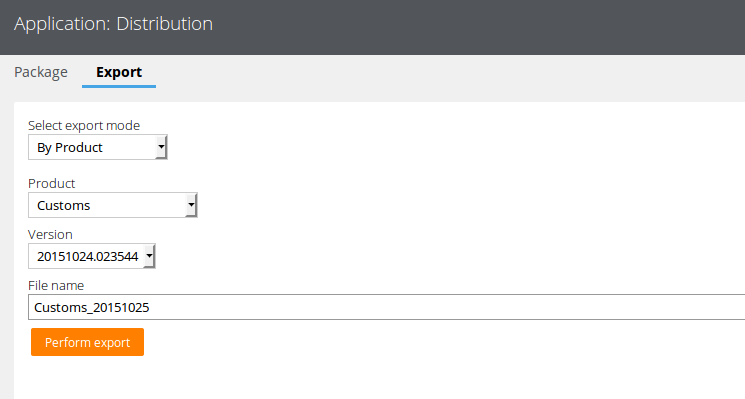
锁定RuleSet
点击“执行导出”按钮后会出现如下提示：
这个Product涉及未锁定的RuleSet版本实例，请使用下面链接锁定它们或更新你的Product rule以允许导出未锁定的版本。如果在Product rule中勾选了允许导出未锁定版本的RuleSet，请确保你保存了该Product rule，否则不会生效。
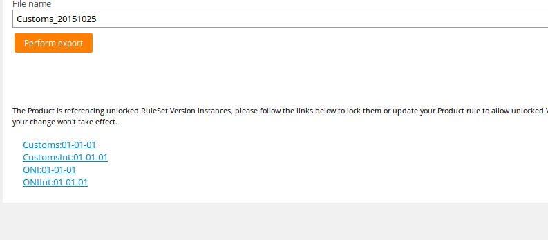
依次点开提示中的链接后点击“Lock and Save”锁定RuleSet版本
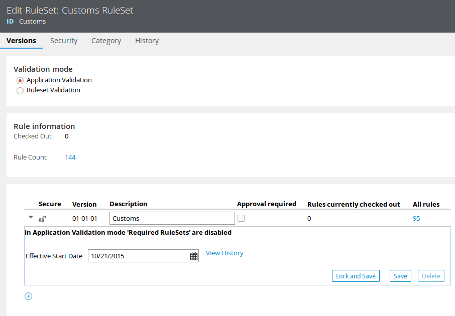
设置Product rule
注意：如果你已经锁定了RuleSet（锁定RuleSet）则无需此操作
打开左侧的Records面板，依次点开SysAdmin -> Product，找到我们要导出的Product对应的Product rule
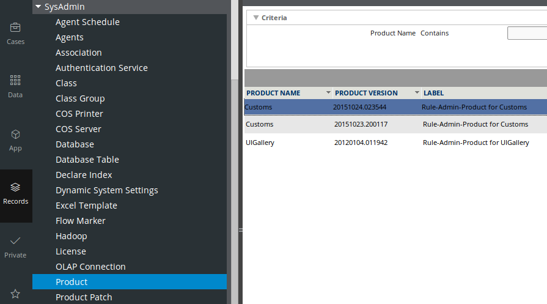
在Product rule的底部勾选“Allow unlocked ruleset versions?”然后保存
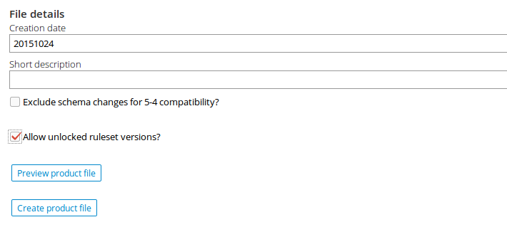
导出应用
设置完成后就可以导出应用了
点击“执行导出”按钮，耐心等待，导出完成后会出现一个链接，右键另存为即可保存导出的应用到本地
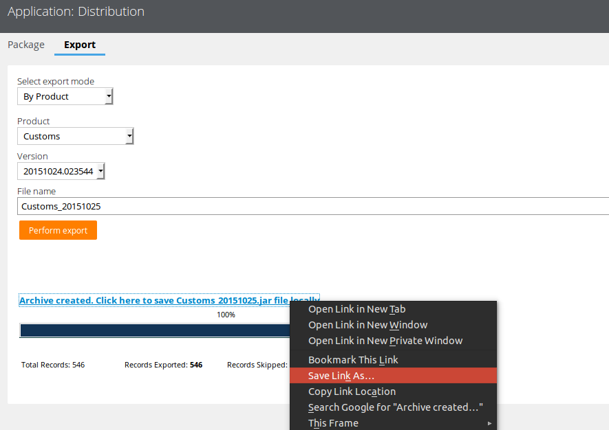
附1：导出单条Rule
前面我们实现了整个应用的导出，但如果我们只想导出一条或几条Rule时该怎么办呢？
其实我们在配置导出参数的第一步，在Package标签中一路点击Next到最后时，Pega 7自动为我们生成了一条Product Rule。我们在设置Product rule时仅仅是设置其允许导出未锁定版本的RuleSet，其实我们可以做的更多。
在我们想导出的Rule的右上角，点击Action按钮并选择View XML
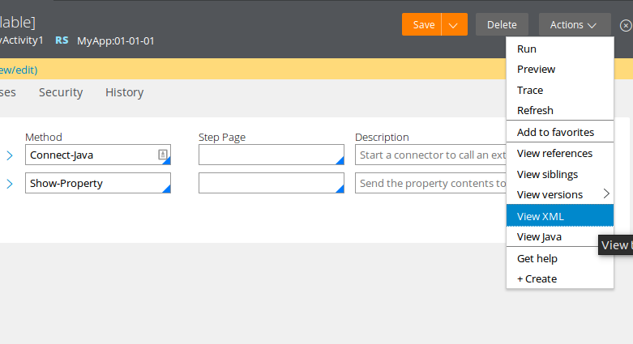
然后搜索pzInsKey
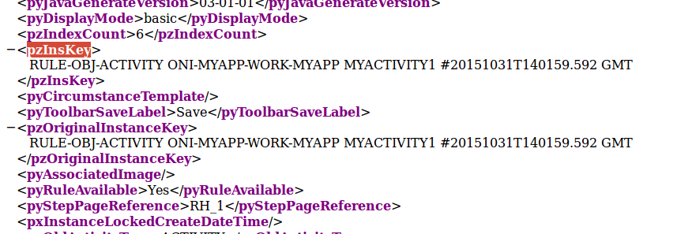
然后我们新建一个Product的Rule，把pzInsKey里面的内容填到Individual instances to include区域的Key下，Label下的内容可以随便填
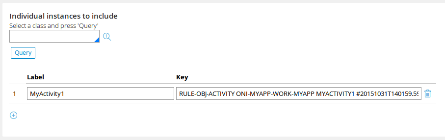
保存Product Rule后点击最下面的Create product file按钮即可导出单条Rule了
附2：更简单的导出方法
在Application Menu中选择Open Overview
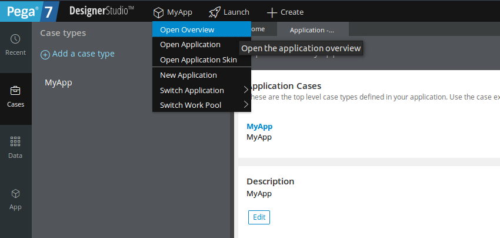
点击左上角的Action按钮，依次选择 Package Application -> Basic 即可导出应用程序了
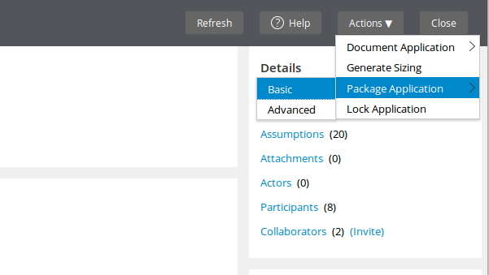